Room 1 r13：补齐门所在后墙，细化连续灯带
后墙原先仍是过疏的宽墙板差分；本版以PixelLab补齐。灯带由PixelLab生成灯罩与槽边细节，并压回表面过曝使纹理可见。保持原UV2环境照明。制作与验证记录
后墙游戏效果：r12 → r13
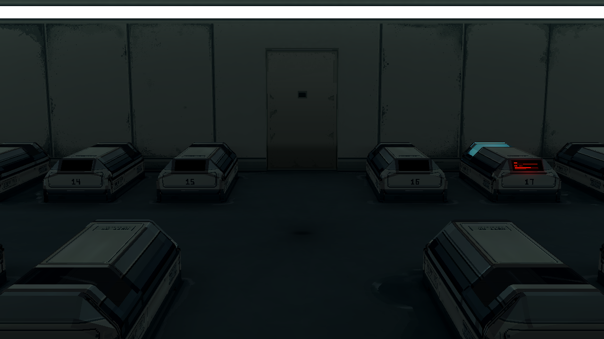
game_center_before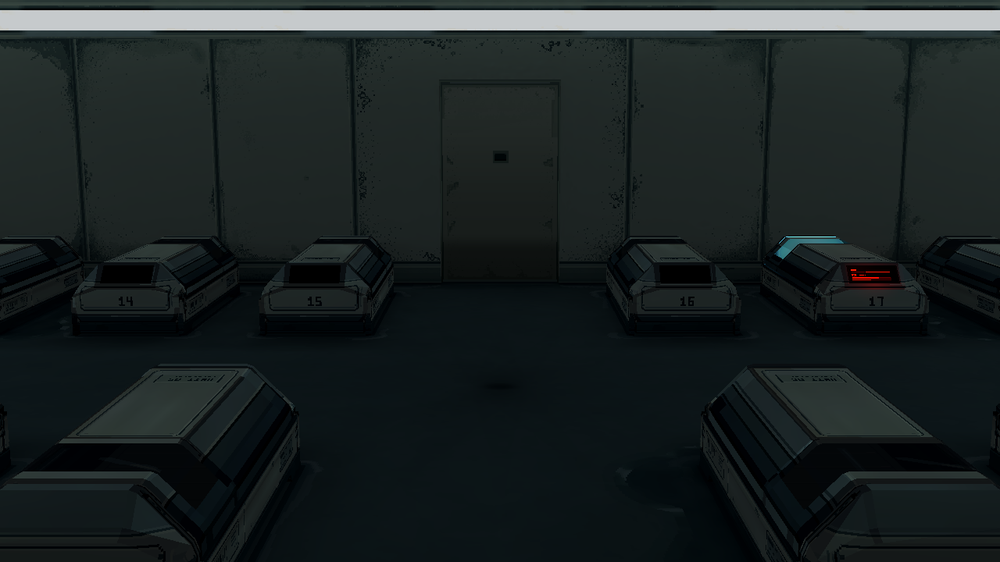
game_center_after门所在宽墙板近景
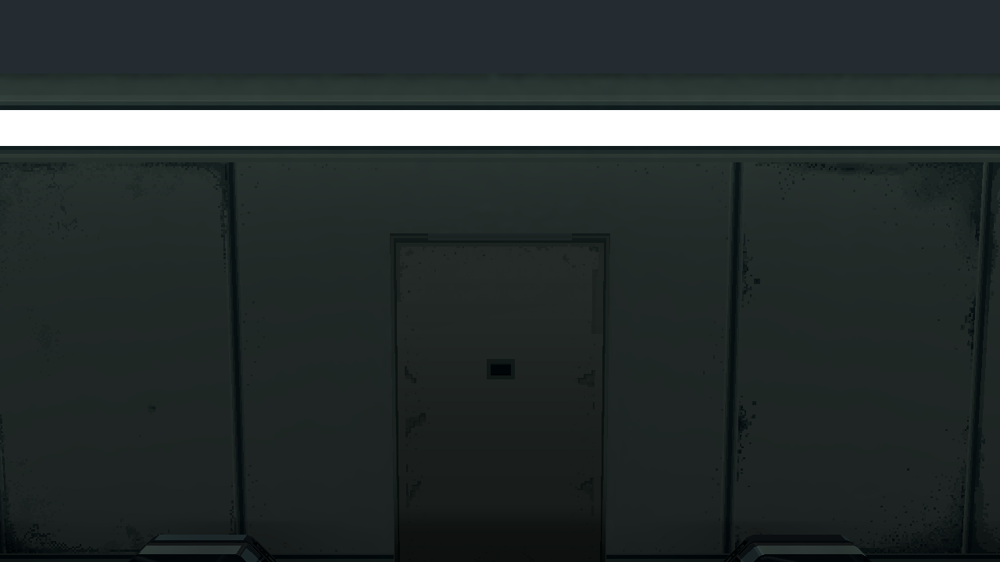
rear_close_before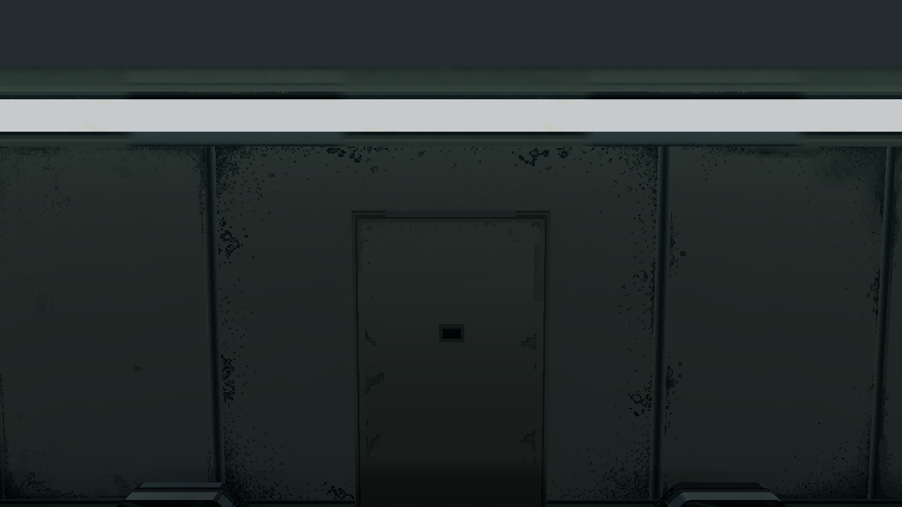
rear_close_after后墙原生贴图
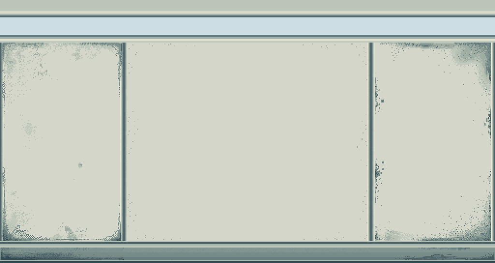
rear_map_before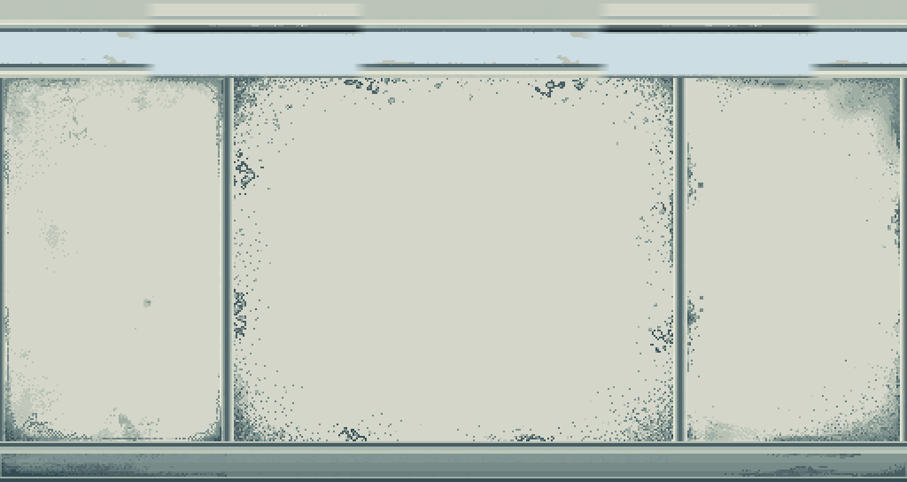
rear_map_after灯带发光表面
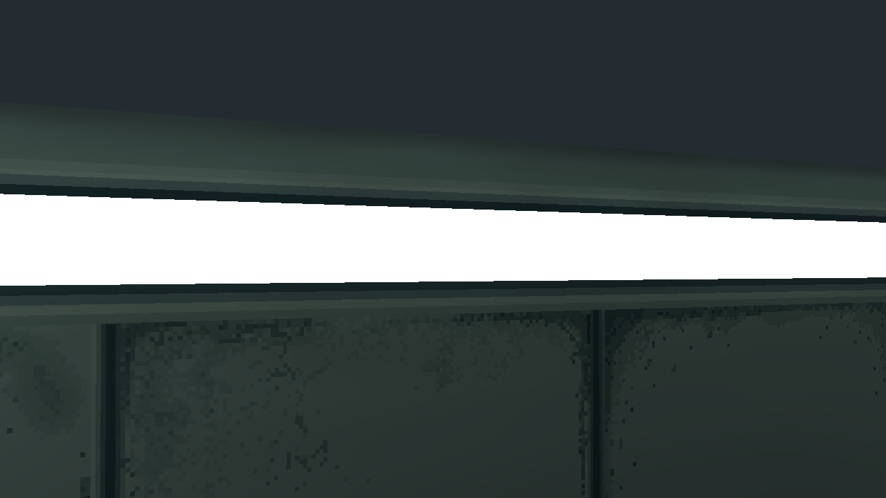
lamp_close_before lamp_close_after
lamp_close_after灯带颜色诊断
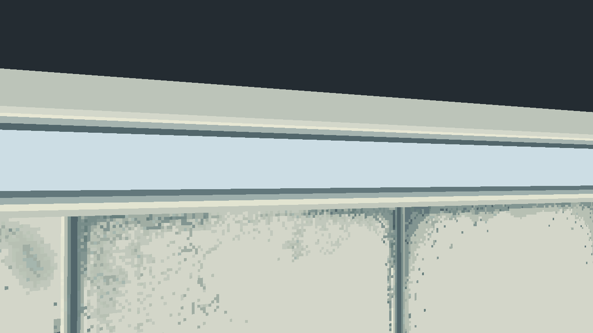
lamp_color_before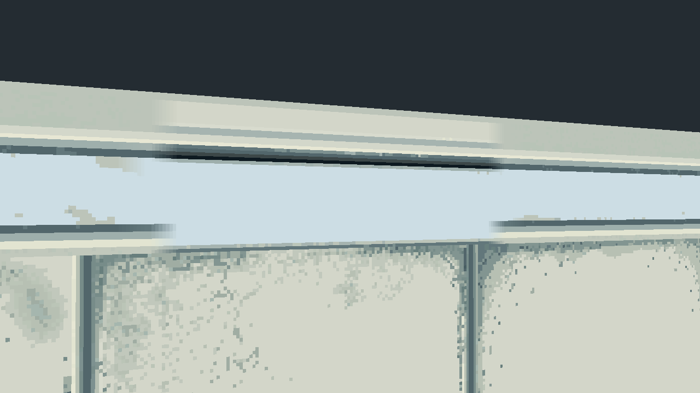
lamp_color_after灯带开启／关闭
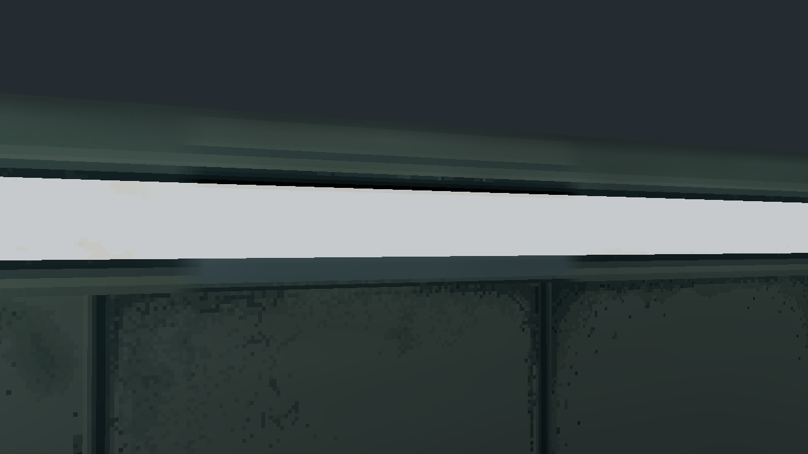
lamp_on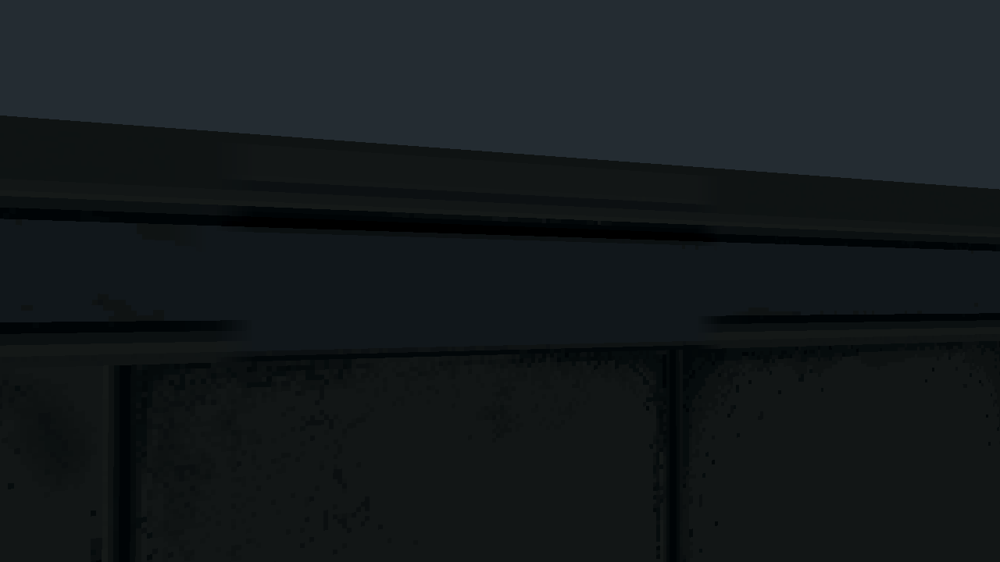
lamp_off灯带四个转角
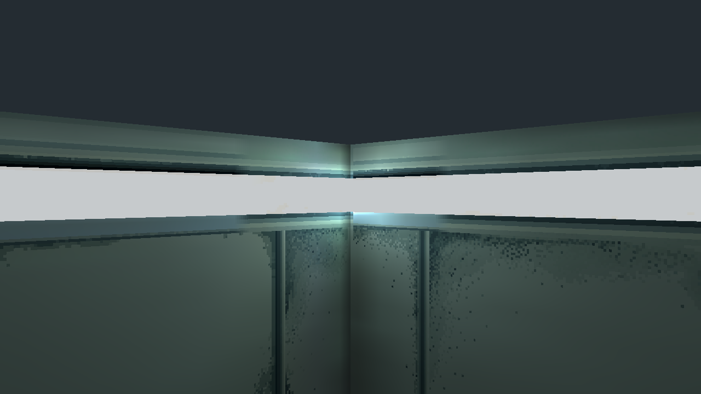
lamp_corner_front_left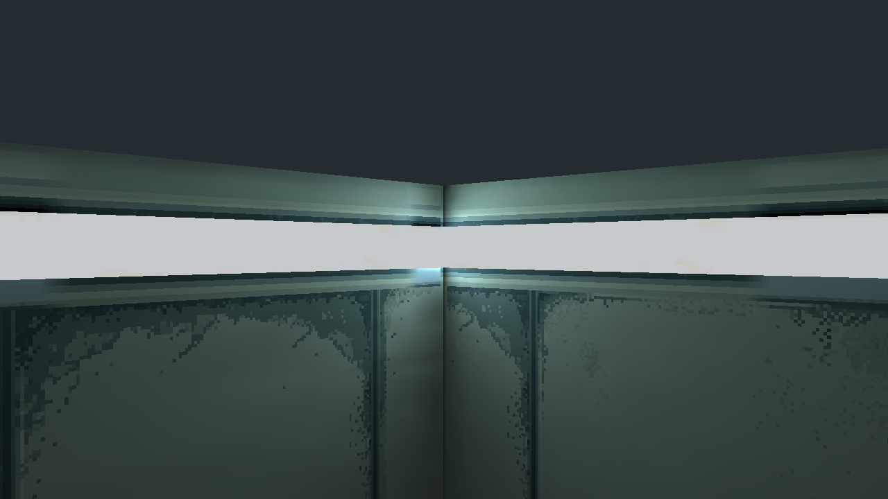
lamp_corner_rear_left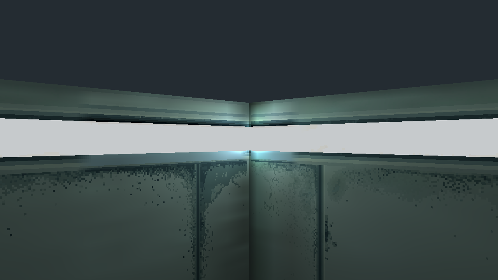
lamp_corner_front_right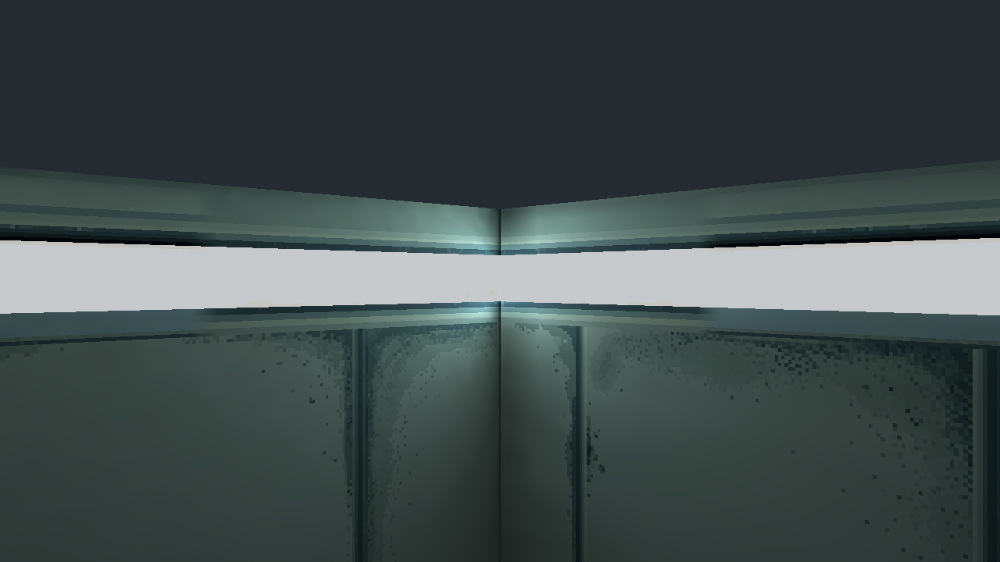
lamp_corner_rear_right整室左右
 game_left_after
game_left_after game_right_after
game_right_after四角与前墙
 survey_front_left
survey_front_left survey_rear_left
survey_rear_left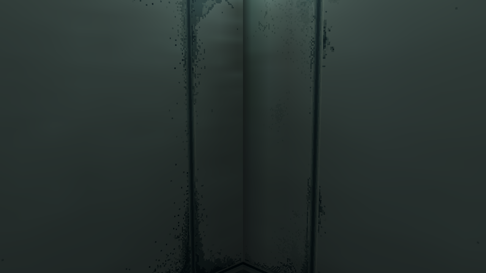
survey_front_right survey_rear_right
survey_rear_right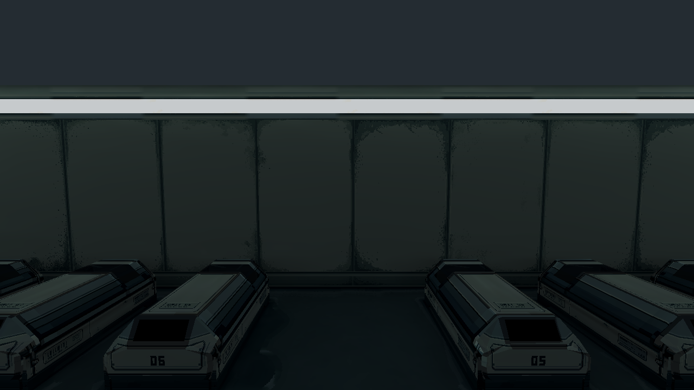
survey_front_full